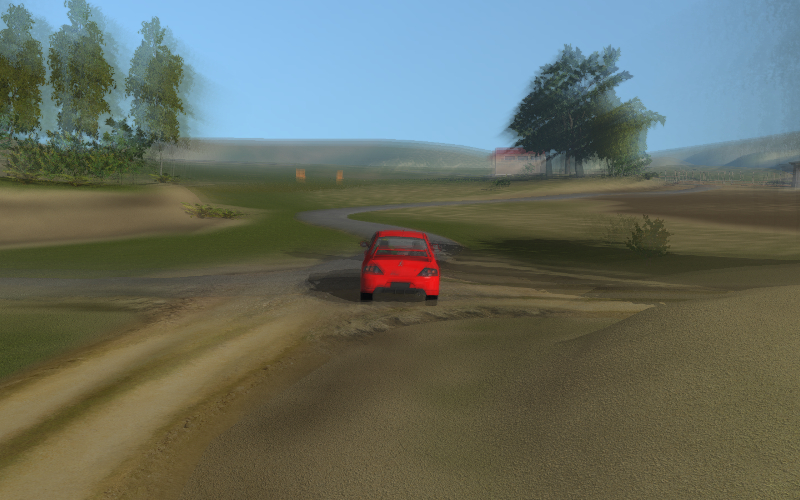
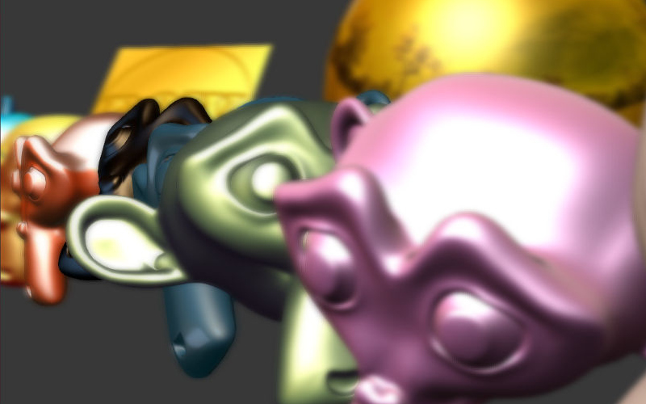
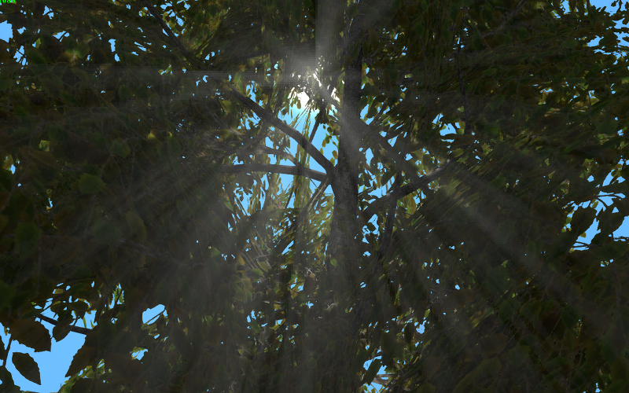
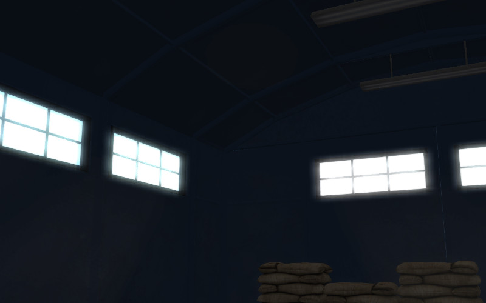
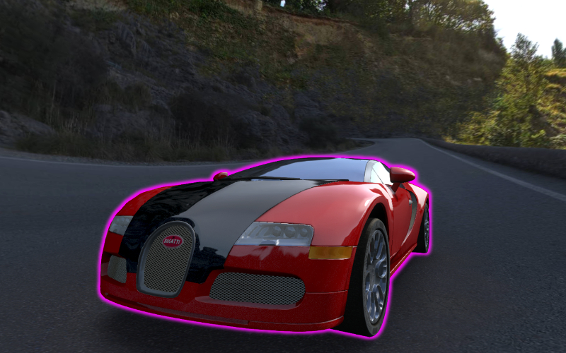

后期处理效果¶
运动模糊¶
运动模糊效果可以用来改善交互式场景的真实感。当相机或物体移动，显示为画面模糊。
{kind=link}
激活¶
激活 Render 选项卡上的 Motion Blur 面板。
其他设置¶
- 因子
外观的影响比例。此值越高越强的运动模糊。
- 衰减阈值
模糊淡出率。较高的这个值有更鲜明的效果。默认值是0.01。
景深¶
场景深度效应（DOF）可以用于强调场景的一部分。从相机对焦点之外的地方开始图像模糊 。
{kind=link}
激活¶
选择一个主控摄像头，并转到它的设置面板
Camera(Object Data).然后有两种选择：
在
Depth of Field面板的Focus选项选择一个物体作为相机的对焦点。在这种情况下移动或接近这个物体，会导致相机的焦点相应的修正。同一面板上为
Distance设置一个非零值（Blender中单位=米）。在这种情况下，相机焦点在相机的这个距离值，并与相机一起移动。
附加设置¶

- 焦点
设置的重点对象。默认情况下，此字段为空。
- 距离
此参数定义焦距。仅当
Focus参数没有预先设置（如果相应的字段为空）有用。默认设置为零。- 前端起始
此选项设置（以米为单位） 焦点到最近的平面到模糊效应开始出现前的距离（相对于相机） 。默认值是 1.0。
只有启用了
High Quality (Bokeh)参数，此参数才可用。- 前端结束
这个设置从相机和最近平面 （相对于相机） 背后的模糊效果达到最大强度 （由
Power的值定义） 的距离。默认值为 5.0。- 后方开始
这设置从焦点到最远的平面（相对于相机）的距离，模糊效果开始发生。默认值为1.0.
只有启用了
High Quality (Bokeh)参数，此参数才可用。- 后方结束
这设置从相机到最远的平面（相对于相机）的距离，模糊达到最大强度（由
Power的值定义）。默认值为5.0。- 指数
模糊的比率。此参数的值可从 0.1 至 10。默认值为 2.0。
- 高品质（背景虚化）
这使得高质量渲染景深效果。激活此选项︰
启用的散景效果，并使
Bokeh Intensity参数可用来调整影响强度。启用
Front Start和Rear Start参数设置从相机里的影响开始发生软过渡之间的距离，它达到其全部的力量的距离。启用
Foreground Blur的参数，如下所述。
参数默认被禁用的。
- 散景强度
此值设置的散景效果的强度。它可以从 0 到 1.0 会发生变化。默认设置为 0.3。
- 前景模糊
启用此选项使引擎模糊前景物体的轮廓，提高质量的代价是性能略有降低作用。默认为禁用。
屏幕空间环境光遮蔽¶
屏幕空间环境光遮蔽（SSAO）效果，可用于仿造在物体周围复杂的光线反射。这种效果的基础是，近处的物体之间的空间为漫射光不易进入的，因而是更暗。

激活¶
激活 Render 标签下 Ambient Occlusion SSAO 面板，在 Render > Shadows 面板设置 Render Shadows 到参数 AUTO 或 ON 。
其他设置¶
- 半径增加
从内部采样环到外部采样环的球形采样半径的乘法系数。默认值是3.0。
- 使用半球
使用半球形采样着色，而不是球形。它使用不同的着色方法。
- 使用模糊深度测试
使用边缘保持模糊到SSAO如果标志将被打开。否则，它采用模糊平均为每个像素周围的4×4的矩形。
- 模糊深度测试丢弃值
对模糊量的采样之间的深度差异的影响。它采用
Use Blur Depth Test启动标志。缺省值为1.0。- 影响
SSAO外观系数。默认值是0.7。
- 距离系数
SSAO衰减的距离系数。默认值是0.0（即没有衰减）。
- 采样
采样数（越多采样有更好的是质量，但较差是性能）。默认值是16。
上帝光芒¶
神光芒的效果（又名曙暮辉）模拟著名的自然现象 - 空气照明部分的闪耀。
{kind=link}
激活¶
激活 Render 选项卡下的 God Rays 面板。
其他设置¶
- 强度
影响外观的系数。默认值是0.7。
- 最大长度光线
光线长度的系数。限定径向模糊的样本之间的步长。缺省值为1.0。
- 每通道步值
每个单个样本步长。默认值是10.0。
泛光效果¶
泛光出现在画面中有一个非常不同的亮度元素。生成一个发光的光环围绕着明亮的细节。
{kind=link}
激活¶
激活 Render 选项卡下的 Bloom 面板。
其他设置¶
- 使用自适应
使用自适应平均亮度的计算。默认启用。
- 强度
泛光强度。默认设置为1.0。
- 模糊
泛光模糊的系数，默认设置为4.0。
- 边缘亮度
元素的相对亮度的边界值，高于其的亮度时泛光效果出现。默认设置为1.0。
物体外轮廓¶
作为轮廓辉光效应，围绕物体显示发光的光晕。
{kind=link}
激活¶
外轮廓是通过API编程激活。不同的动画模型可以应用，如不断晕光，淡出的光晕，光晕脉动和任何其他。为了使某一物体上勾勒的效果，确保 Render > Object Outlining 面板的 Enable 属性设置为 ON 或 AUTO 。
其他设置¶
在 Object > Selection and Outlining 面板：
- 启用外轮廓
允许使用此物体的轮廓发光效果。
- 持续
辉光动画的持续时间，单位为秒。默认值是1。
- 周期
辉光动画的重复周期，单位为秒。默认值是1。
- 重复
辉光动画迭代次数。如果为零，动画将永远重复。缺省值是0。
- 选择时外轮廓
在选择物体时激活辉光动画。在这种情况下，
Selectable选项必须启用。在用户定义的辉光动画模型的情况下，以避免冲突此选项必须被禁用。
在 Render > Object Outlining 面板：
- 因子
当这个参数减小围绕物体的辉光的厚度亮度也减小。默认值是1。
当通过API初始化辉光效果时 Render > Object Outlining 被作为默认值。
{kind=link}
{kind=link}